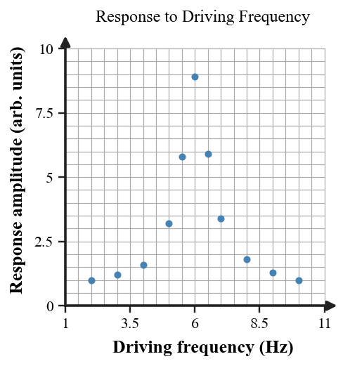

A device is driven at several frequencies. The graph shows its response amplitude.

Explain why the large response near one driving frequency is evidence for resonance. Connect the peak to natural frequency.
Explain the difference using driving frequency, natural frequency, and energy transfer.
A $256\,\text{Hz}$ tuning fork is struck near two identical-looking forks. Fork A has a natural frequency of $256\,\text{Hz}$; Fork B has a natural frequency of $300\,\text{Hz}$.
Predict which fork responds more strongly and explain why the result is a resonance effect rather than simply "nearby objects vibrate."
During a vibration test, a model bridge responds weakly at 2 Hz and 4 Hz, very strongly at 5 Hz, and weakly again at 7 Hz.
Construct a resonance explanation for the pattern. State what the evidence suggests about the bridge model's natural frequency.
Critique the statement. Explain what relationship between driving frequency and natural frequency is missing, and why force size alone is not the definition of resonance.
A speaker drives a lightweight panel. The panel vibrates a little at most frequencies but strongly at one narrow range.
A student concludes, "The speaker is simply louder at that frequency." Analyze another explanation based on the panel's natural frequency and identify evidence that would distinguish the explanations.
Two models are proposed for a tuning-fork demonstration:
Defend the better resonance model and describe one observation that would test the choice.
A structure is driven at 3, 4, 5, 6, and 7 Hz. The measured amplitudes are 1, 2, 7, 2, and 1 cm.
Use the data to identify the likely natural frequency and explain how the pattern supports a resonance model rather than a simple "higher frequency means larger amplitude" rule.